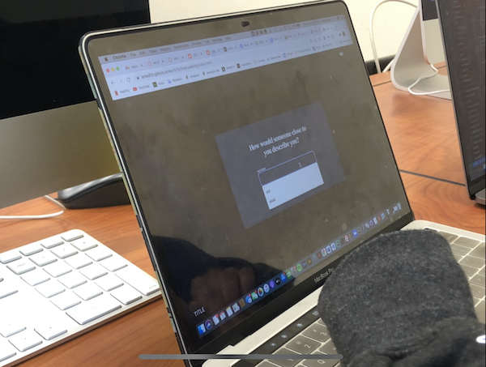
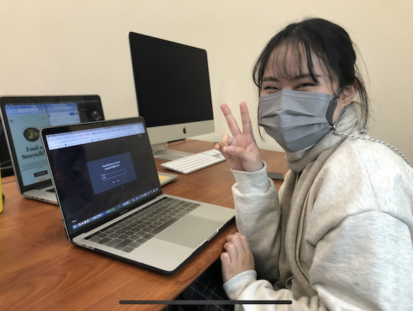
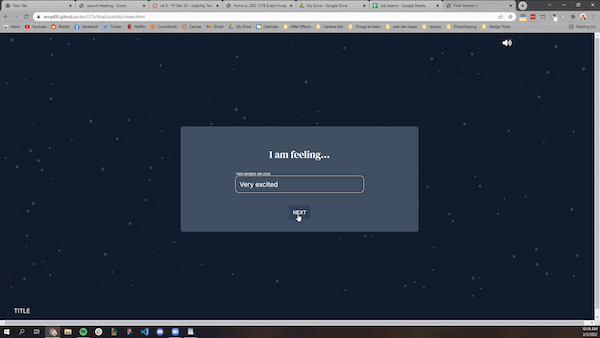

I noticed that when all the users were testing, they would click the title in the bottom left corner or refresh the page. I realized that they were trying to go back to the welcome page. After testing and asking users about it, they all said that there should be a way to navigate back to the welcome page. They assumed the the title text at the bottom would take them there.
While users were playing around with the site and adding a response using the participate button or when adding a new response from the gallery page, they would start the form and and answer a few of the questions before stopping. They would either continue or refresh the page. I have a button to close the form that comes up once the user decides to add a new response from the gallery page. However after watching users interact with the sites and after listening to their feedback, the consensus was to always have the button to close the form be displayed.
When the quote page come up, most of the users would move their mouse around their screen trying to figure out what to do next. I have a delay on the buttons being displayed on the quote pages to give users time to read the text. However it seemed that the buttons should not be delayed because users either weren't interetsed at the time to read the quote and/or couldn't figure how to move on.
I will update my final project by implementing most of the feedback given. I will be implementing changes that I talked about in my observations. I will be linking the title text to the welcome page or having another icon that will let the users go back the welcome page. I will have the close button always be on display on the forms, and I will also be removing the delay from the buttons on the quote pages. Some other changes are rephrasing one of the form questions, fixing horizontal scroll, and having an effect on the responses on the gallery view when hovering on it to indicate an interaction.